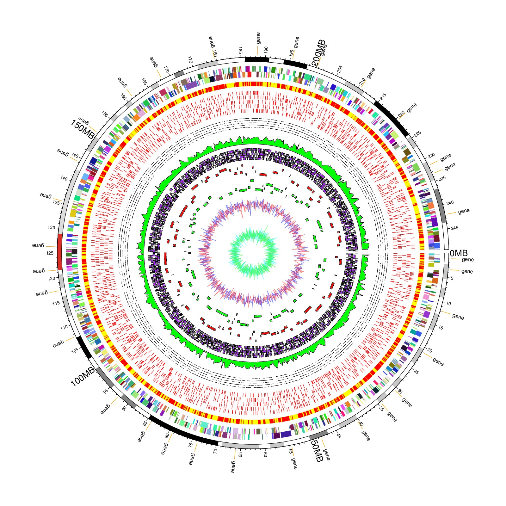

re-produced from Jimmy H. W. Saw et al, Plos ONE, 2013
rand_col = function(k) {
return(rgb(runif(k), runif(k), runif(k)))
}
library(circlize)
par(lwd = 0.5)
circos.par("cell.padding" = c(0, 0, 0, 0))
circos.initializeWithIdeogram(chromosome.index = "chr1", plotType = NULL)
posTransform.fun = function(region) {
return(region)
}
bed = generateRandomBed(nr = 400, fun = function(k) rep("gene", k))
circos.genomicTrackPlotRegion(bed, ylim = c(0, 1), panel.fun = function(region, value, ...) {
circos.genomicText(region, value, y = 0, labels.column = 1, facing = "clockwise", adj = c(0, 0.5), cex = 0.5, posTransform = posTransform.fun)
}, track.height = 0.05, bg.border = NA)
circos.genomicPosTransformLines(bed, posTransform = posTransform.fun, track.height = 0.04, col = "orange")
cytoband = read.cytoband()$df
circos.genomicTrackPlotRegion(cytoband, stack = TRUE, panel.fun = function(region, value, ...) {
circos.genomicRect(region, value, col = cytoband.col(value[, 2]), border = NA, ...)
cell.xlim = get.cell.meta.data("cell.xlim")
cell.ylim = get.cell.meta.data("cell.ylim")
circos.rect(cell.xlim[1], cell.ylim[1], cell.xlim[2], cell.ylim[2], border = "black")
major.at = seq(0, cell.xlim[2], by = 5000000)
major.labels = major.at/1000000
l = major.at %% 50000000 == 0
major.labels[l] = ""
circos.axis("top", major.at = major.at, labels = major.labels, labels.facing = "clockwise", labels.cex = 0.4, major.tick.percentage = 0.5)
circos.text(major.at[l], rep(1.7, sum(l)), paste0(major.at[l]/1000000, "MB"), cex = 0.8, facing = "clockwise", adj = c(0, 0.5), niceFacing = TRUE)
}, bg.border = NA, track.height = 0.02)
bed_list = list(generateRandomBed(nr = 5000),
generateRandomBed(nr = 5000))
circos.genomicTrackPlotRegion(bed_list, stack = TRUE, panel.fun = function(region, value, ...) {
circos.genomicRect(region, value, col = rand_col(nrow(region)), border = NA, ...)
}, bg.border = NA, track.height = 0.05)
bed = generateRandomBed(nr = 5000)
circos.genomicTrackPlotRegion(bed, stack = TRUE, panel.fun = function(region, value, ...) {
circos.genomicRect(region, value, col = "red", border = NA)
}, bg.border = NA, bg.col = "yellow", track.height = 0.02)
bed_list = list(generateRandomBed(nr = 5000),
generateRandomBed(nr = 5000),
generateRandomBed(nr = 5000),
generateRandomBed(nr = 5000),
generateRandomBed(nr = 5000))
circos.genomicTrackPlotRegion(bed_list, stack = TRUE, panel.fun = function(region, value, ...) {
i = getI(...)
for(k in seq_len(nrow(region))) {
circos.lines(rep(mean(region[k, 1], region[k, 2]), 2), c(i - 0.4, i + 0.4), straight = TRUE, col = "red")
}
}, track.height = 0.1, bg.border = NA)
bed_list = list(generateRandomBed(nr = 5000),
generateRandomBed(nr = 5000),
generateRandomBed(nr = 5000),
generateRandomBed(nr = 5000),
generateRandomBed(nr = 5000))
circos.genomicTrackPlotRegion(bed_list, stack = TRUE, panel.fun = function(region, value, ...) {
circos.genomicLines(region, value, type = "segment", ...)
}, track.height = 0.05, bg.border = NA)
bed = generateRandomBed(nr = 5000)
circos.genomicTrackPlotRegion(bed, panel.fun = function(region, value, ...) {
circos.genomicLines(region, value, area = TRUE, col = "green", border = "black", ...)
}, bg.border = NA, track.height = 0.05)
bed_list = list(generateRandomBed(nr = 5000),
generateRandomBed(nr = 5000),
generateRandomBed(nr = 5000),
generateRandomBed(nr = 5000),
generateRandomBed(nr = 5000))
circos.genomicTrackPlotRegion(bed_list, stack = TRUE, panel.fun = function(region, value, ...) {
circos.genomicRect(region, value, col = "purple", border = "black", ...)
}, track.height = 0.05, bg.border = NA)
bed = generateRandomBed(nr = 1000, fun = function(k) sample(5, k, replace = TRUE))
circos.genomicTrackPlotRegion(bed, ylim = c(0.5, 5.5), panel.fun = function(region, value, ...) {
for(i in seq_len(nrow(region))) {
circos.rect(region[i, 1], value[i, 1]-0.5, region[i, 2], value[i, 1] + 0.5, col = "red")
}
}, bg.border = NA, track.height = 0.05)
bed = generateRandomBed(nr = 1000, fun = function(k) sample(5, k, replace = TRUE))
circos.genomicTrackPlotRegion(bed, ylim = c(0.5, 5.5), panel.fun = function(region, value, ...) {
for(i in seq_len(nrow(region))) {
circos.rect(region[i, 1], value[i, 1]-0.5, region[i, 2], value[i, 1] + 0.5, col = "green")
}
}, bg.border = NA, track.height = 0.05)
col = c("#0000FF80", "#FF000080")
bed_list = list(generateRandomBed(),
generateRandomBed())
circos.genomicTrackPlotRegion(bed_list, panel.fun = function(region, value, ...) {
i = getI(...)
circos.genomicLines(region, value, type = "l", col = col[i], ...)
}, track.height = 0.1, bg.border = NA)
col = c("#00FFFF80", "#00FF0080")
bed_list = list(generateRandomBed(),
generateRandomBed())
circos.genomicTrackPlotRegion(bed_list, panel.fun = function(region, value, ...) {
i = getI(...)
circos.genomicLines(region, value, type = "l", col = col[i], ...)
}, track.height = 0.1, bg.border = NA)
circos.clear()